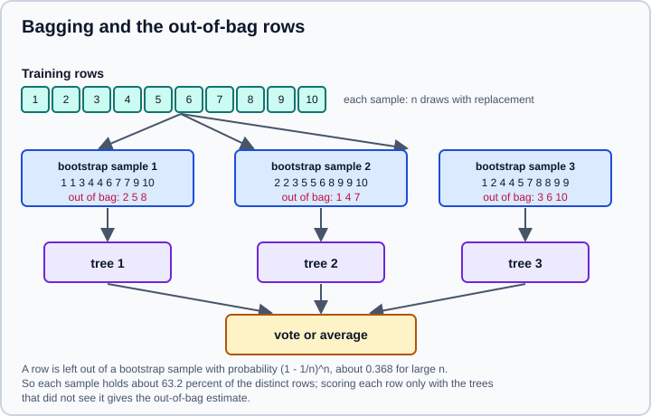
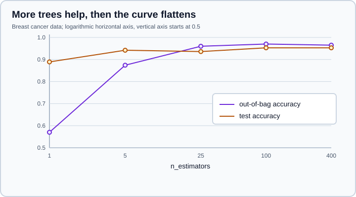

Random Forests & Bagging
|
This content was generated with the assistance of AI and should be verified against the official documentation before being relied on in production. |
A single decision tree is easy to read but unstable: it fits its training data too closely, and a small change in the data changes the tree (see Decision Trees). Averaging many trees fitted on different resamples of the data removes most of that variance while keeping the low bias of deep trees. That is bagging, and a random forest is bagging with one extra twist that makes the trees less alike. This page targets NumPy 2.5 and scikit-learn 1.9, was checked in October 2026, and every example was run on Python 3.13.18, NumPy 2.5.4 and scikit-learn 1.9.1. Examples target Python 3.13 or 3.14. Boosting, the other family of tree ensembles, is on Gradient Boosting & HistGradientBoosting, and voting and stacking on Voting, Stacking & Multiclass.
All estimators are in sklearn.ensemble and follow The Estimator API.
Bagging
Bagging (bootstrap aggregating) trains each ensemble member on a bootstrap sample: a sample of the same size as the training set drawn with replacement. Each sample contains about 63.2 percent of the distinct training rows, because a row is missed by one draw with probability 1 - 1/n, so by all n draws with probability about 0.368. The rows a member did not see are its out-of-bag (OOB) rows, a free validation set. Predictions are combined by averaging the predicted probabilities (classification) or the predictions (regression).

BaggingClassifier and BaggingRegressor wrap any estimator, not only trees. The main arguments are:
| Argument | Meaning |
|---|---|
|
The base estimator to clone for each member (default a decision tree). Renamed from |
|
Number of members (default 10). |
|
Rows per member (int or fraction, default all) and whether rows are drawn with replacement (default |
|
Columns per member (default all) and whether they are drawn with replacement. Training each member on a random subset of columns is called random subspaces. |
|
Compute |
|
Add members to the existing ensemble, run in parallel, and fix the randomness. |
Bagging pays off for high-variance, low-bias base estimators such as deep trees. It does little for a stable estimator like a linear model or, often, a nearest-neighbour model (see the comparison below).
Random forests
A random forest is bagged decision trees with an additional randomisation: at each split a tree considers only a random subset of the features (max_features), not all of them. Without it, one very strong feature would sit at the top of every tree and make the trees correlated, and averaging correlated trees removes less variance. Choosing a subset forces some trees to use other features, which decorrelates them at a small cost in the bias of each tree.
from sklearn.datasets import load_breast_cancer
from sklearn.ensemble import BaggingClassifier, ExtraTreesClassifier, RandomForestClassifier
from sklearn.model_selection import cross_val_score, train_test_split
from sklearn.tree import DecisionTreeClassifier
X, y = load_breast_cancer(return_X_y=True, as_frame=True)
X_tr, X_te, y_tr, y_te = train_test_split(X, y, test_size=0.3, stratify=y, random_state=0)
models = {
"single tree": DecisionTreeClassifier(random_state=0),
"bagged trees": BaggingClassifier(DecisionTreeClassifier(), n_estimators=100, random_state=0),
"random forest": RandomForestClassifier(n_estimators=100, random_state=0),
"extra trees": ExtraTreesClassifier(n_estimators=100, random_state=0),
}
for name, model in models.items():
model.fit(X_tr, y_tr)
cv = cross_val_score(model, X_tr, y_tr, cv=5).mean()
print(f"{name:<14} cv={cv:.3f} test={model.score(X_te, y_te):.3f}")Output:
single tree cv=0.925 test=0.906 bagged trees cv=0.955 test=0.936 random forest cv=0.960 test=0.953 extra trees cv=0.975 test=0.936
Every ensemble beats the single tree by 3 to 5 points of cross-validated accuracy. The differences among the three ensembles are within a point or two on 171 test rows (one row is 0.006), so they are not evidence that one is better; compare by repeated cross-validation on your own data. Both RandomForestClassifier and RandomForestRegressor are described by the same arguments:
| Argument | Meaning |
|---|---|
|
Number of trees; default 100 since 0.22 (it was 10 in older releases). |
|
Features considered at each split. Classifier default |
|
Draw bootstrap samples (default |
|
The tree-size controls of Decision Trees. Forest trees are fully grown by default. |
|
|
|
Out-of-bag score (accuracy by default, or a callable |
|
|
|
Per-feature monotonic constraints (1.4), as on a single tree. |
|
Reuse trees when growing, parallelise, reproduce. |
The out-of-bag estimate
With oob_score=True each training row is predicted only by the trees whose bootstrap sample did not contain it, and oob_score_ is the accuracy of those predictions. It behaves like a validation score without a separate split, which is useful when data is scarce.
rf = RandomForestClassifier(n_estimators=300, oob_score=True, random_state=0, n_jobs=-1).fit(X_tr, y_tr)
print("oob", round(rf.oob_score_, 3), "test", round(rf.score(X_te, y_te), 3))
print(rf.oob_decision_function_[:2].round(3))Output:
oob 0.967 test 0.953 [[0.01 0.99 ] [0.025 0.975]]
The OOB accuracy of 0.967 is close to the test accuracy of 0.953, as expected. oob_decision_function_ holds the OOB class probabilities per training row. The score needs enough trees for every row to be left out at least once; with very few trees a warning says that some inputs have no OOB prediction. It is only an estimate for the forest as fitted: it does not replace cross-validation when the forest is part of a larger search, and it is not available with bootstrap=False. Rows that are duplicated or grouped (several rows from the same patient, for example) leak between in-bag and out-of-bag rows, so use group-aware cross-validation there (Cross-Validation & Splitters).
How many trees
More trees reduce variance with diminishing returns and never cause overfitting by themselves; the cost is training time, prediction time and memory. The OOB score shows when the curve flattens:
for n in (1, 5, 25, 100, 400):
m = RandomForestClassifier(n_estimators=n, oob_score=True, random_state=0, n_jobs=-1).fit(X_tr, y_tr)
print(f"n_estimators={n:<4} oob={m.oob_score_:.3f} test={m.score(X_te, y_te):.3f}")Output (with n_estimators=1 a warning reports rows without an out-of-bag prediction):
n_estimators=1 oob=0.570 test=0.889 n_estimators=5 oob=0.874 test=0.942 n_estimators=25 oob=0.960 test=0.936 n_estimators=100 oob=0.970 test=0.953 n_estimators=400 oob=0.965 test=0.953

The first value of n_estimators=1 has a low OOB score because most rows are predicted by no tree at all. After about 100 trees the score only wobbles. Set warm_start=True to grow a forest in stages without refitting the trees already built: raise n_estimators and call fit again, and only the new trees are trained.
grown = RandomForestClassifier(n_estimators=50, warm_start=True, random_state=0)
for n in (50, 100, 150):
grown.set_params(n_estimators=n).fit(X_tr, y_tr)
print(n, len(grown.estimators_), round(grown.score(X_te, y_te), 3))Output:
50 50 0.947 100 100 0.953 150 150 0.953
max_features
max_features is the most important forest parameter after n_estimators. Small values decorrelate the trees more (less variance) but make each tree weaker (more bias); max_features=None makes the forest plain bagging. The square root of the number of features is a good default for classification.
for mf in (1, 3, "sqrt", 0.5, None):
m = RandomForestClassifier(n_estimators=200, max_features=mf, random_state=0, n_jobs=-1)
print(f"max_features={str(mf):<5} cv={cross_val_score(m, X_tr, y_tr, cv=5).mean():.3f}")Output:
max_features=1 cv=0.955 max_features=3 cv=0.962 max_features=sqrt cv=0.960 max_features=0.5 cv=0.950 max_features=None cv=0.947
Accuracy is flat for small values, and falls as max_features approaches all 30 features (the bagging end). Tune it together with min_samples_leaf using a randomised search (Grid, Randomized & Halving Search); forests are otherwise forgiving and need much less tuning than boosting.
Bagging other estimators
Bagging works with any estimator. The comparison below bags a scaled k-nearest-neighbour classifier and a scaled decision tree, with half of the rows and half of the columns per member:
from sklearn.neighbors import KNeighborsClassifier
from sklearn.pipeline import make_pipeline
from sklearn.preprocessing import StandardScaler
for name, est in (("knn", KNeighborsClassifier()), ("tree", DecisionTreeClassifier(random_state=0))):
base = make_pipeline(StandardScaler(), est)
bag = BaggingClassifier(base, n_estimators=50, max_samples=0.5, max_features=0.5,
oob_score=True, random_state=0)
single = cross_val_score(base, X_tr, y_tr, cv=5).mean()
bagged = cross_val_score(bag, X_tr, y_tr, cv=5).mean()
print(name, "single", round(single, 3), "bagged cv", round(bagged, 3), "oob", round(bag.fit(X_tr, y_tr).oob_score_, 3))Output:
knn single 0.967 bagged cv 0.96 oob 0.957 tree single 0.925 bagged cv 0.955 oob 0.957
Bagging lifts the unstable tree from 0.925 to 0.955 and does nothing for the stable nearest-neighbour model (0.967 alone, 0.960 bagged). Put the preprocessing inside the base pipeline, as above, so that each member scales its own sample (Pipelines). The nearest-neighbour model is on Nearest Neighbors.
Extremely randomised trees
ExtraTreesClassifier and ExtraTreesRegressor go one step further: besides random feature subsets, each candidate split uses a random threshold, and the best of those random splits is kept. Their default is bootstrap=False, so every tree sees all rows, which makes them faster to train and often slightly smoother. The extra randomness adds bias and reduces variance; as the first example showed, the ranking against a random forest depends on the data, so try both. Their arguments are those of the forest.
Feature importance
feature_importances_ of a forest is the mean over its trees of the impurity decrease per feature, normalised to sum to 1 (mean decrease in impurity, MDI). It is free, but it is computed on the training data and favours features with many distinct values, so it can credit a feature that carries no signal. Permutation importance measures instead how much a score on held-out data falls when one column is shuffled (Permutation Importance & Partial Dependence). The experiment adds a column of random unique numbers, which cannot help prediction:
import numpy as np
import pandas as pd
from sklearn.inspection import permutation_importance
rng = np.random.default_rng(0)
X_noise = X_tr.copy()
X_noise["noise_id"] = rng.permutation(len(X_noise)).astype(float)
X_noise_te = X_te.copy()
X_noise_te["noise_id"] = rng.permutation(len(X_noise_te)).astype(float)
forest = RandomForestClassifier(n_estimators=300, random_state=0, n_jobs=-1).fit(X_noise, y_tr)
perm = permutation_importance(forest, X_noise_te, y_te, n_repeats=20, random_state=0, n_jobs=-1)
table = pd.DataFrame({"mdi": forest.feature_importances_, "permutation": perm.importances_mean},
index=X_noise.columns)
print(table.sort_values("mdi", ascending=False).head(5).round(3))
print(table.loc["noise_id"].round(4))Output:
mdi permutation worst radius 0.136 0.009 worst perimeter 0.122 0.002 worst area 0.114 0.008 worst concave points 0.112 0.009 mean concave points 0.101 0.003 mdi 0.0029 permutation 0.0000 Name: noise_id, dtype: float64
The noise column received a small but non-zero MDI of 0.0029, while its permutation importance on the test set is zero, as it should be. The top features also differ in the two columns: the many correlated size features (radius, perimeter, area) share the credit under MDI, and shuffling any one of them barely hurts, because the others still carry the signal, which is why their permutation scores are small. Correlated features make both measures hard to read; group them or remove redundancy first. Importances explain the model, not the world: they do not prove a causal effect.
Missing values
RandomForestClassifier and RandomForestRegressor accept NaN in fit and predict since 1.4, using the missing-value handling of their trees, and ExtraTreesClassifier and ExtraTreesRegressor accept it as well, sending missing values at random to one side of each random split. BaggingClassifier passes the data to its base estimator, so it works when that estimator (a decision tree here) accepts NaN.
Xna = X_tr.to_numpy().copy()
Xna[rng.random(Xna.shape) < 0.1] = np.nan
Xna_te = X_te.to_numpy().copy()
Xna_te[rng.random(Xna_te.shape) < 0.1] = np.nan
for cls in (RandomForestClassifier, ExtraTreesClassifier):
m = cls(n_estimators=100, random_state=0).fit(Xna, y_tr)
print(cls.__name__, "NaN accepted, test accuracy", round(m.score(Xna_te, y_te), 3))
BaggingClassifier(DecisionTreeClassifier(), random_state=0).fit(Xna, y_tr)
print("BaggingClassifier with a tree base estimator also fits")Output:
RandomForestClassifier NaN accepted, test accuracy 0.936 ExtraTreesClassifier NaN accepted, test accuracy 0.93 BaggingClassifier with a tree base estimator also fits
Blanking about 10 percent of the values costs about 0.017 of accuracy for the forest, without any imputation. Old advice that forests need imputed data no longer holds, although an explicit imputer inside a pipeline is still a good comparison (Imputing Missing Values).
Imbalanced classes
class_weight="balanced" weights classes inversely to their frequency over the whole training set; "balanced_subsample" recomputes the weights inside each bootstrap sample. The synthetic data below has 95 percent of one class.
from sklearn.datasets import make_classification
from sklearn.metrics import balanced_accuracy_score, recall_score
Xi, yi = make_classification(4000, 10, weights=[0.95], flip_y=0.02, random_state=0)
Xi_tr, Xi_te, yi_tr, yi_te = train_test_split(Xi, yi, stratify=yi, test_size=0.3, random_state=0)
for cw in (None, "balanced", "balanced_subsample"):
m = RandomForestClassifier(n_estimators=200, class_weight=cw, min_samples_leaf=3,
random_state=0, n_jobs=-1).fit(Xi_tr, yi_tr)
pred = m.predict(Xi_te)
print(f"class_weight={str(cw):<19} recall={recall_score(yi_te, pred):.3f} "
f"balanced_acc={balanced_accuracy_score(yi_te, pred):.3f}")Output:
class_weight=None recall=0.486 balanced_acc=0.739 class_weight=balanced recall=0.714 balanced_acc=0.830 class_weight=balanced_subsample recall=0.586 balanced_acc=0.784
Weighting raises the recall of the rare class from 0.486 to 0.714 here, and balanced accuracy from 0.739 to 0.830. The threshold of the predicted probability can also be moved without refitting, which is often a better lever (Tuning the Decision Threshold). Evaluate with the metrics of Metrics & Scoring, not accuracy.
Regression
RandomForestRegressor averages the tree predictions. It shares the weakness of trees: it cannot extrapolate beyond the target range seen in training.
from sklearn.datasets import load_diabetes
from sklearn.ensemble import RandomForestRegressor
Xd, yd = load_diabetes(return_X_y=True)
rfr = RandomForestRegressor(n_estimators=200, oob_score=True, random_state=0, n_jobs=-1).fit(Xd, yd)
print("oob R2", round(rfr.oob_score_, 3))
x1 = np.linspace(0, 6, 200).reshape(-1, 1)
t1 = 2 * x1.ravel() + rng.normal(0, 0.5, 200)
trend = RandomForestRegressor(n_estimators=100, random_state=0).fit(x1, t1)
print(trend.predict([[3.0], [6.0], [10.0]]).round(2))Output:
oob R2 0.418 [ 5.74 11.61 11.61]
For regression the OOB score is the coefficient of determination R2. The second experiment follows y = 2x on 0 to 6, and the forest predicts the same 11.61 at x=6 and x=10: a flat extension of the edge. For trends that continue, model the trend with a linear model first and fit the forest to the residual. See Linear Models & Logistic Regression.
Size, speed and parallelism
Fully grown trees store every node, so a forest can be large. The experiment fits 100 trees on 20 000 rows with default settings and with min_samples_leaf=5:
import pickle
from sklearn.datasets import make_classification
Xl, yl = make_classification(20000, 20, random_state=0)
big = RandomForestClassifier(n_estimators=100, random_state=0, n_jobs=-1).fit(Xl, yl)
small = RandomForestClassifier(n_estimators=100, min_samples_leaf=5, random_state=0, n_jobs=-1).fit(Xl, yl)
for name, m in (("default", big), ("min_samples_leaf=5", small)):
nodes = sum(tree.tree_.node_count for tree in m.estimators_)
print(f"{name:<19} nodes={nodes:>7} pickle={len(pickle.dumps(m)) / 1e6:.1f} MB")Output:
default nodes= 276682 pickle=22.2 MB min_samples_leaf=5 nodes= 154156 pickle=12.4 MB
Limiting the leaf size almost halves the model. Whether it changes the accuracy must be checked, but a smaller forest also predicts faster. n_jobs=-1 parallelises fit, predict, apply and decision_path over the trees, and the results are identical to a single-job run for the same random_state. Trees are built independently, so training scales almost linearly with cores until memory bandwidth limits it. Save models with the care described on Model Persistence & Security: a pickled forest is large and must be loaded in the same scikit-learn version.
Random trees embedding
RandomTreesEmbedding is an unsupervised transformer: it grows totally random trees (no target is used) and encodes each sample as a one-hot vector of the leaves it reached in every tree. The result is a high-dimensional sparse representation in which nearby points share many leaves; it can feed a linear model.
from sklearn.ensemble import RandomTreesEmbedding
embedding = RandomTreesEmbedding(n_estimators=10, max_depth=3, random_state=0)
Z = embedding.fit_transform(X_tr)
print(type(Z).__name__, Z.shape, "leaves hit per row:", int(Z.sum(axis=1).min()))Output:
csr_matrix (398, 74) leaves hit per row: 10
There are 74 leaves in total in the 10 trees and every row activates exactly one leaf in each tree, hence 10. The same representation can be built from a trained supervised forest with apply, which returns the leaf index of each sample per tree.
Pitfalls and where older material is outdated
-
Extrapolation. Forests predict inside the range of the training targets only.
-
Interpretability. A forest of hundreds of deep trees cannot be read; use importances, partial dependence and permutation importance as described on Permutation Importance & Partial Dependence, and remember their limits.
-
Memory. Cap tree size (
min_samples_leaf,max_depth) for large data. -
Probabilities. Forest probabilities are averages of leaf fractions; they are usually under-confident near 0 and 1 and can be calibrated (Probability Calibration).
-
Leakage. Fit any scaler or encoder on training folds only, inside a
Pipeline; forests do not need scaling. -
Randomness. Set
random_state; results vary slightly otherwise, mostly with few trees. -
High-cardinality features. MDI and the splits favour them; encode or drop identifiers (an ID column is exactly the noise example).
| Older statement or code | Current behaviour |
|---|---|
|
Default 100 since 0.22. |
|
Removed; use |
|
Renamed |
|
Removed; |
Forests need imputed data |
Native |
|
Deprecated in 1.9, removal in 1.11. |
|
Removed in 1.0; use |
Source: scikit-learn: Ensembles
References
-
scikit-learn: Permutation Importance vs Random Forest Feature Importance (MDI)
-
L. Breiman, "Random Forests", Machine Learning 45 (2001), publisher page